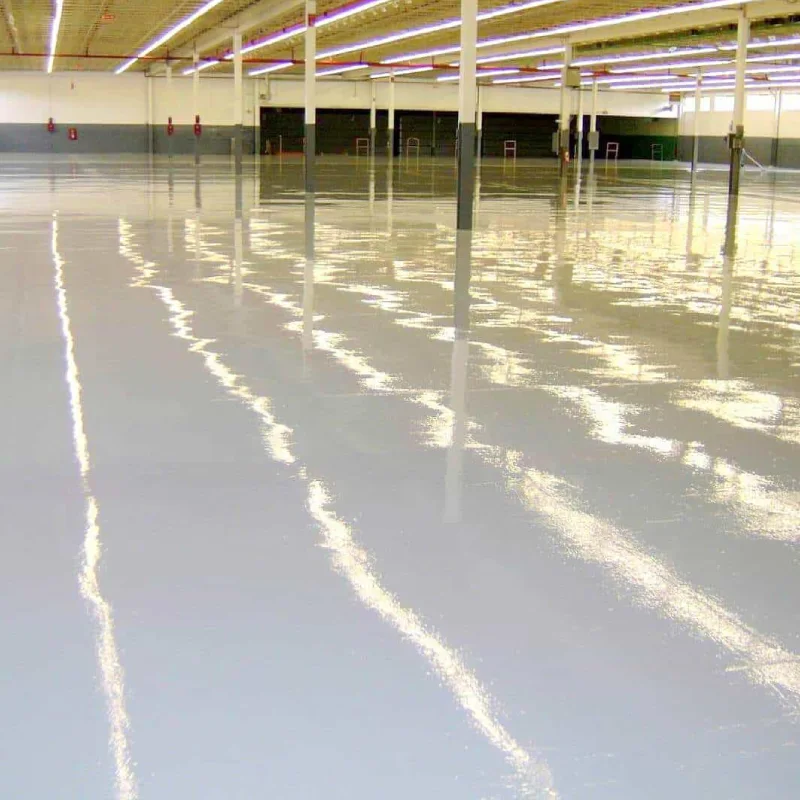

INDUSTRIAL
EPOXY FLOORING
If your floor takes a beating every day — forklifts, heavy loads, chemicals, foot traffic — this is the system you need. Industrial epoxy is thick, hard-wearing, and sealed so tight that spills sit on top instead of soaking in. We use it in warehouses, logistics centres, port facilities, and manufacturing plants. Once it's down, it works quietly for years without asking for much.

COMMERCIAL
FLOORING
A retail space, office, or showroom floor does two things: it takes daily wear, and it makes an impression. Commercial epoxy handles both. It's easy to clean, stands up to foot traffic, and looks sharp. We can do clean solid colours, textured finishes, or decorative chip systems — whatever fits the space and the brand.

DECORATIVE
RESIN FLOORING
This is the category where floors stop being functional and start being part of the design. Metallic finishes, marble-like swirls, deep gloss surfaces that reflect light like water — decorative resin is what we use in luxury homes, boutique hotels, and high-end hospitality spaces. Every pour is slightly different, which means no two floors are exactly alike.
CONCRETE
REPAIR & PREP
A coating is only as good as what's underneath it. Most flooring failures happen because someone skipped the preparation — they coated over cracks, damp concrete, or a dusty surface and hoped for the best. We don't do that. Before any epoxy goes down, the substrate gets properly assessed and treated. This includes crack injection, levelling compounds, moisture tests, and mechanical grinding.

PROTECTIVE
COATINGS
Not every floor needs a full epoxy system. Sometimes what you need is a protective seal — something to stop moisture, dust, and surface wear without changing the look of the floor. We offer polyurethane topcoats, penetrating sealers, and anti-carbonation coatings for concrete surfaces that need protection without a full resurfacing.

ANTI-MICROBIAL
HEALTHCARE FLOORING
Hospitals, clinics, laboratories, and pharmaceutical facilities require floors that go beyond standard hygiene. Anti-microbial epoxy systems incorporate active agents that inhibit the growth of bacteria and fungi on the surface — critical in environments where contamination has real consequences. The surface is also seamless, which eliminates the joints and grout lines where pathogens typically accumulate.

ANTI-STATIC
ESD SYSTEMS
Electrostatic discharge is a serious risk in military facilities, electronics manufacturing, data centres, and aviation environments. A single uncontrolled static discharge can damage sensitive equipment or trigger hazardous ignition. Anti-static ESD flooring systems provide a controlled path to ground, keeping static charge within safe limits. These are specified and installed to IEC 61340 standards.
EPOXY MORTAR
SYSTEMS
Epoxy mortar is the heaviest-duty flooring system we install. Typically applied at 6–12mm thickness, it's designed for environments with extreme mechanical loading, thermal shock, heavy chemical exposure, or direct food and beverage contact. Food processing plants, commercial kitchens, chemical storage facilities, and breweries are typical applications. The system can be sloped to drain, textured for slip resistance, and coved at the walls for full hygiene compliance.